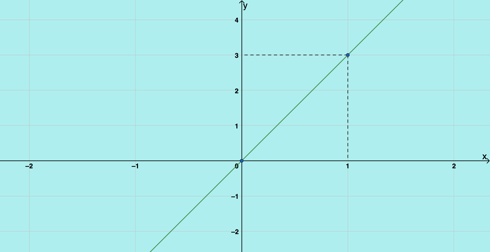
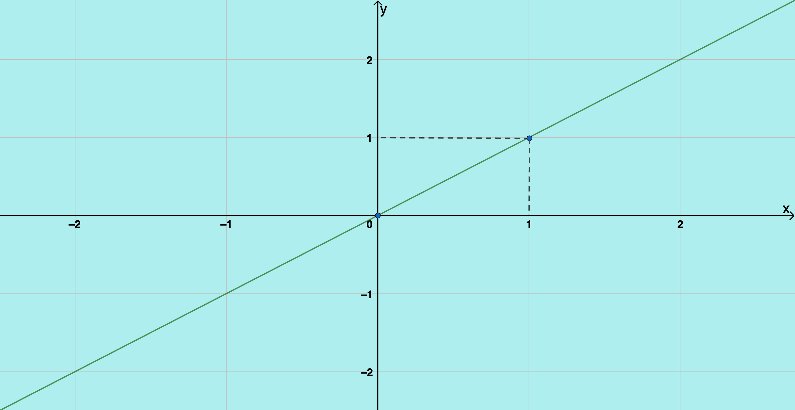
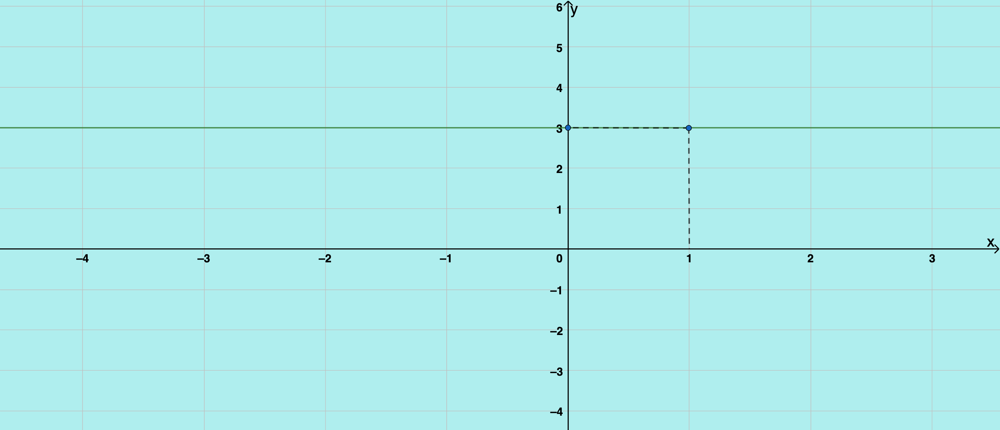
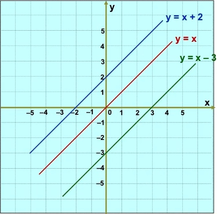

Função Afim
A temperatura de uma substância é $30\degree C$.
Vamos analisar duas situações a seguir.
Situação 1
Sua temperatura varia com o tempo de maneira uniforme, aumentando $10\degree C$ por minuto.
Observe as temperaturas, medidas minuto a minuto.
| $t(min)$ | $0$ | $1$ | $2$ | $3$ | $4$ | $5$ |
|---|---|---|---|---|---|---|
| $T(\degree C)$ | $30$ | $40$ | $50$ | $60$ | $70$ | $80$ |
A taxa de variação da temperatura é positiva $(10\degree C/min)$.
Após $t$ minutos, a temperatura $T$ da substância em $\degree C$ é:
$T = 30 + 10 \cdot t$
Situação 2
Sua temperatura varia com o tempo de maneira uniforme, aumentando $10\degree C$ por minuto.
Observe as temperaturas, medidas minuto a minuto.
| $t(min)$ | $0$ | $1$ | $2$ | $3$ | $4$ | $5$ |
|---|---|---|---|---|---|---|
| $T(\degree C)$ | $30$ | $20$ | $10$ | $0$ | $-10$ | $-20$ |
A taxa de variação da temperatura é positiva $(10\degree C/min)$.
Após $t$ minutos, a temperatura $T$ da substância em $\degree C$ é:
$T = 30 - 10 \cdot t$
Veja o gráfico da situação 1
| $t(min)$ | $T(\degree C)$ |
|---|---|
| $0$ | $30$ |
| $1$ | $40$ |
| $2$ | $50$ |
| $3$ | $60$ |
| $4$ | $70$ |
| $5$ | $80$ |
$T = 30 + 10 \cdot t$

Veja o gráfico da situação 2
| $t(min)$ | $T(\degree C)$ |
|---|---|
| $0$ | $30$ |
| $1$ | $20$ |
| $2$ | $10$ |
| $3$ | $0$ |
| $4$ | $-10$ |
| $5$ | $-20$ |
$T = 30 - 10 \cdot t$

Função Afim ou Função Polinomial do Primeiro Grau é toda função do tipo:
$y = f(x) = ax + b$
Em que $a$ e $b$ são números reais, com $a \neq 0$.
Se $b = 0$, temos a função $y = f(x) = ax$, chamada, também, função linear.
Exemplos:
- $y = 5x -3$
- $y = \frac{x}{5} + \sqrt{3}$
- $y = -x + \frac{1}{2}$
é uma função afim, com $a = 5$ e $b = -3$
é uma função afim, com $a = \frac{1}{5}$ e $b = \sqrt{3}$.
é uma função afim, com $a=-1$ e $b=\frac{1}{2}$.
Características da função afim
$y = ax + b$
- A fórmula que a define é um polinômio de $1\degree grau$; seu termo independente pode ser nulo ou não.
- Se $b = 0$, temos a função $f(x)=ax$, chamada de função linear.
- A constante real $a$, não-nula, é chamado de coeficiente angular. Ela é a mesma, qualquer que seja o intervalo considerado.
- A constante real $b$ é chamado de coeficiente linear.
- Seu gráfico cartesiano é uma linha reta, não paralela aos eixos das abscissa e ordenada. Ela pode pode conter a origem (caso $b = 0$) ou não pode conter a origem (caso $b \neq 0$).
- O crescimento ou decrescimento da função estão relacionados com o sinal de $a$.
- A reta é crescente para $a > 0$ e decrescente para $a < 0$.
Casos Especiais
Função Linear $\longrightarrow$ $b = 0$, Ex: $f(x) = 3x$
Casos Especiais
Função Identidade $\longrightarrow$ $b = 0$ e $a = 1$, ou seja, $f(x) = x$
Casos Especiais
Função Constante $\longrightarrow$ $a = 0$, Ex: $f(x) = 3$
Crescimento e Decrescimento da Função Afim
Coeficiente Angular ($a$)
$a > 0$ função crescente
reta ascendente (sobe da esquerda para direita)
$T = 10 \cdot t + 30$
$a < 0$ função crescente
reta ascendente (sobe da esquerda para direita)
$T = - 10 \cdot t + 30$
Ponto onde a Função toca o eixo das Ordenadas (eixo $y$)
Coeficiente Linear ($b$)
O coeficiente linear $b$, é a ordenada do ponto em que a reta corta o eixo y. Ou seja, a reta intercepta o eixo y no ponto de coordenada $(0,b)$.
Construção do gráfico da função $y = 2x +3$.
| x | y |
|---|---|
| 0 | 3 |
| 1 | 5 |
para $x = 0$
$y = 2 \cdot 0+ 3$
$y = 3$
para $x = 1$
$y = 2 \cdot 1+ 3$
$y = 5$